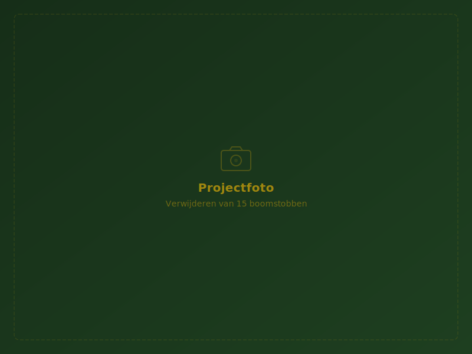
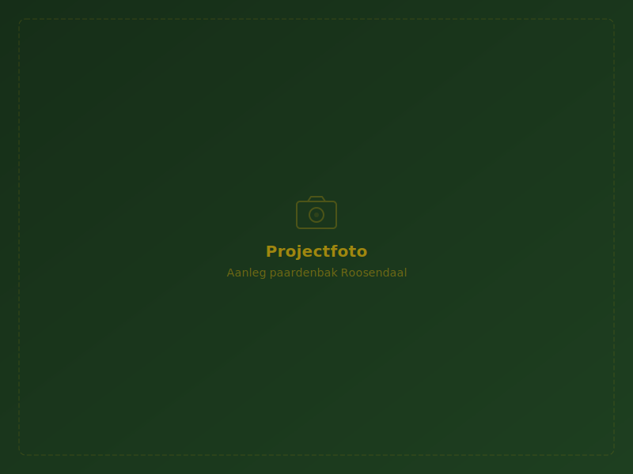
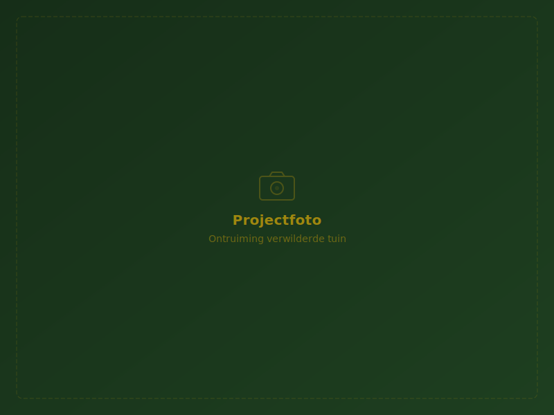

Onze Projecten
Een greep uit het werk waar we trots op zijn.
Portfolio
Recent Bekroond Werk
Beelden zeggen vaak meer dan woorden. Bekijk hier hoe we tuinen, terreinen en percelen succesvol hebben getransformeerd.
Grondwerk
Egaliseren voor Nieuwbouw
Compleet terrein afgegraven, gestabiliseerd en bouwrijp gemaakt in een krappe woonwijk.
Voor / Na Effect

Boomstobben
Verwijderen van 15 Boomstobben
Met de compacte frees door een smalle poort gereden om een complete bossingel in een achtertuin te verwijderen.
Nieuw Project

Miniloonwerk
Aanleg Paardenbak Roosendaal
Complete aanleg van een professionele eb- en vloed rijbaan inclusief lasergestuurd egaliseren.
Bekijk Casestudy

Terreinrenovatie
Ontruiming Verwilderde Tuin
Binnen twee dagen de gehele wildgroei verwijderd en het groenafval verantwoord afgevoerd.